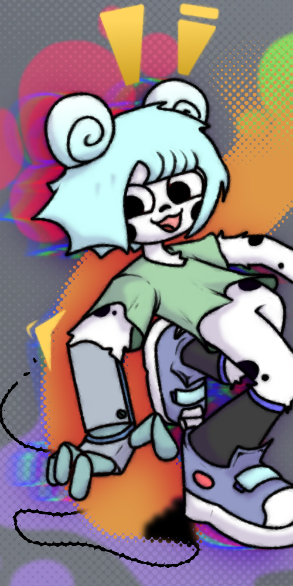

File
Save project (.ijwta)
Load project…
Settings
FPS
Snap to frames
Aspect ratio
Follow first frame
16:9
9:16
4:3
3:4
1:1
Custom size…
Manual ratio…
Ratio
Width
Height
Working size (long edge)
512px (max)
448px
384px
320px (fast)
Export
Format
PNG sequence (.zip)
Animated GIF
MP4 video
Current frame (PNG)
Resolution
Export
Add images to your library, then drag them onto the timeline
Choose images…
0.00s
frame 1 / 1
Stop

Ijwta
I just want to animate.
New project
Load project
Example project
Docs
Credits
GitHub
Ijwta
Close
Loading the interpolation model
Fetching the local AI engine + model (one-time, ~21 MB)…
Retry
Exporting
Stop